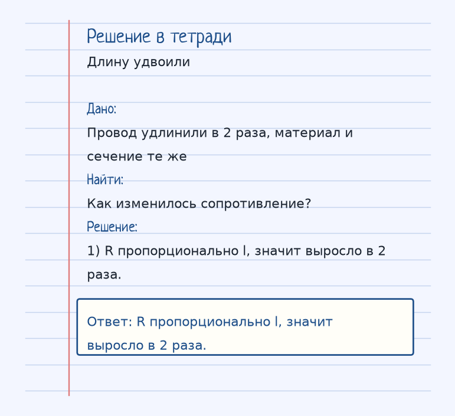
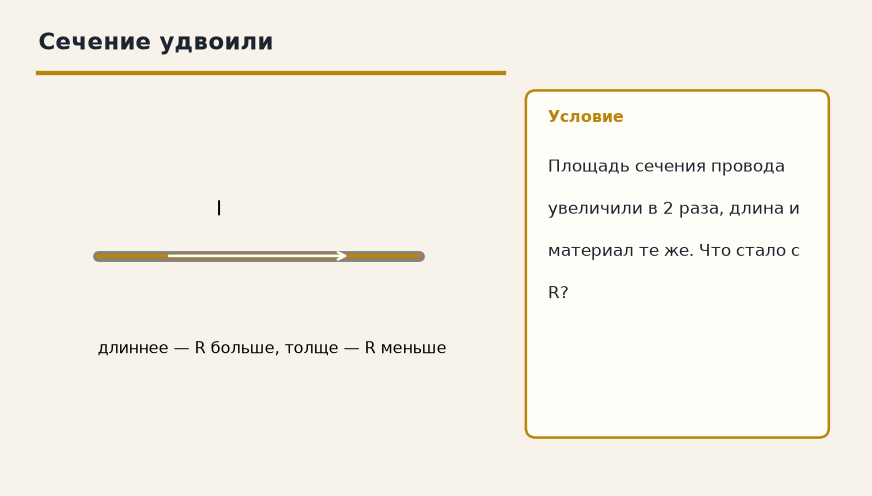

Найди, кто гонит заряд, и что ему мешает. Дальше — аккуратная арифметика, а не заклинание из букв. Ниже — как устроена тема «Сопротивление проводника», где обычно спотыкаются, и два разбора до ответа.
Показ к теме. Это условие, не шпаргалка.
Сначала смысл
Сопротивление зависит от материала, длины и площади поперечного сечения. Чем длиннее проводник — тем больше сопротивление. Чем толще — тем меньше.
Сопротивление проводника R = ρ·l / S. Удельное сопротивление ρ — паспорт материала. Длинный провод хуже короткого: электронам дальше идти, l в числителе. Толстый провод лучше тонкого: больше дорог рядом, S в знаменателе.
Температура ломает эту картину по-разному. У металлов сопротивление с нагревом растёт: решётка сильнее мешает. У полупроводников падает: появляется больше свободных носителей.
Дорога с пробками из аналогии: длинная трасса собирает больше заторов, широкая — пропускает легче.
Как решать. Выпиши величины с рисунка к примеру «Длину удвоили». Условие: Провод удлинили в 2 раза, материал и сечение те же. Как изменилось сопротивление? Дальше подставляй их в формулу этой темы и сверяй шаги с решением под картинкой — оно закрыто, пока не попробуешь сам. Второй рисунок, «Сечение удвоили», тот же приём на других данных: Площадь сечения провода увеличили в 2 раза, длина и материал те же. Что стало с R? Если оба примера сходятся, тему можно нести на контрольную.
Как читать формулу
R = ρ · l / S
ρ — удельное сопротивление (Ом·м), l — длина (м), S — площадь (м²).
ρ — удельное сопротивление (Ом·м), l — длина (м), S — площадь сечения (м²).
Чтобы осталось в голове
Дорога с пробками. Длинная дорога (длина) — больше пробок. Широкая дорога (площадь) — пробок меньше.
Дорога: длиннее — больше пробок, шире — пробок меньше. Так длина и площадь входят в R = ρl/S.
Где обычно спотыкаются
Не перепутай металлы и полупроводники. У металлов R с температурой растёт, у полупроводников падает.
Дальше две задачи. Сначала схема. Когда сам набросаешь ход, открой тетрадь — там дано, перевод в СИ, шаги и ответ в рамке.
Разбор 1
Длину удвоили
Провод удлинили в 2 раза, материал и сечение те же. Как изменилось сопротивление?
На схеме только условие. Ответа там нет — его ещё надо получить.
Смотри на порядок, не на красивое число: сначала единицы, потом формула, потом ответ.
Дано. Провод удлинили в 2 раза, материал и сечение те же
В СИ.
Найти. Как изменилось сопротивление?
Решение.
R пропорционально l, значит выросло в 2 раза.
R пропорционально l, значит выросло в 2 раза.

Разбор 2
Сечение удвоили
Площадь сечения провода увеличили в 2 раза, длина и материал те же. Что стало с R?

На схеме только условие. Ответа там нет — его ещё надо получить.
Смотри на порядок, не на красивое число: сначала единицы, потом формула, потом ответ.
Дано. Площадь сечения провода увеличили в 2 раза, длина и материал те же
В СИ.
Найти. Что стало с R?
Решение.
S стоит в знаменателе, сопротивление уменьшилось в 2 раза.
S стоит в знаменателе, сопротивление уменьшилось в 2 раза.